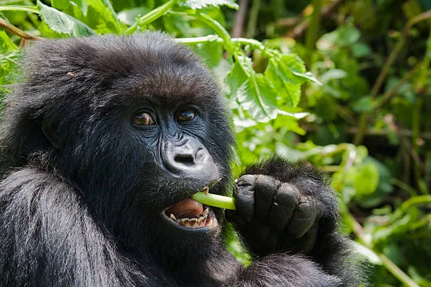
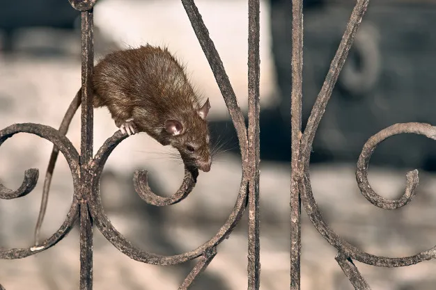
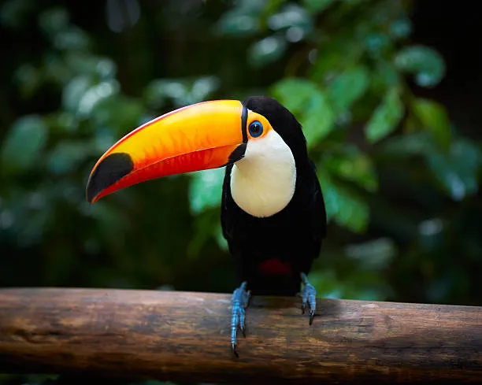
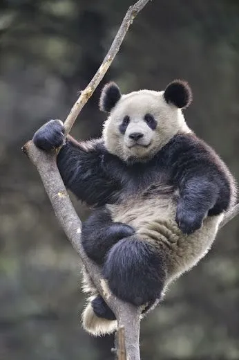
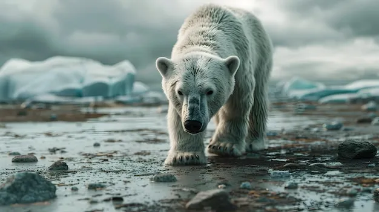
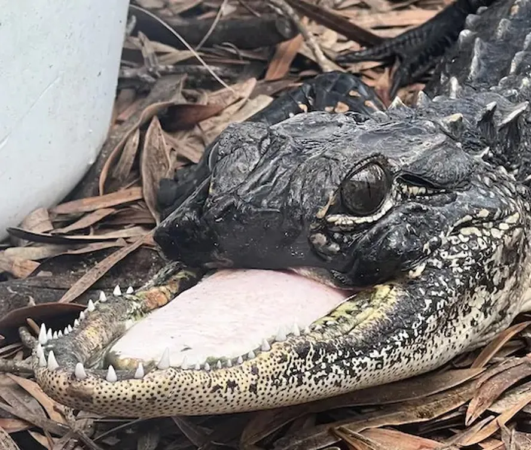

Top10: Animais
Posições:
1º |
2º |
3º |
4º |
5º |
6º |
7º |
8º |
9º |
10º |
10ª Posição: Gorila

O gorila é o maior dos primatas. É um animal que apresenta ancestral comum com os seres humanos, compartilhando cerca de 98% do nosso genoma. Gorilas são animais herbívoros, diurnos e podem ser observados em grupos, formados, geralmente, por um macho dominante, fêmeas e seus filhotes.
9ª Posição: onça

A onça-pintada (Panthera onca) é uma espécie de felino de corpo robusto e musculoso encontrada em praticamente todos os biomas brasileiros, com exceção do Pampa. Esse mamífero carnívoro é considerado o maior felino das Américas e o maior animal carnívoro da América do Sul. Atualmente, tem sido ameaçado em virtude da caça e da destruição de seu habitat.
8ª Posição: Pantera Negra

A pantera negra é um animal pertencente à família dos grandes felinos, e está presente na Ásia, África e nas Américas. A pantera negra em si não é uma espécie distinta, e sim um termo usado para se referir a qualquer animal de coloração preta dentre os grandes felinos, especialmente as onças e os leopardos.
7ª Posição: Puma

O puma, também é chamado de suçuarana, onça-parda e leão-das-montanhas, é o segundo maior felino nativo das Américas ficando atrás apenas da onça-pintada, e o que tem a maior escala de distribuição do que qualquer outro mamífero selvagem no hemisfério ocidental. Pertencente ao grupo dos Felídeos e como a maioria dos indivíduos deste grupo, são animais solitários, carnívoros e territorialistas. Seu nome científico anteriormente era Felis concolor, atualmente renomeado para Puma concolor.
6ª Posição: Rato

Rato é o nome dado a mamíferos pertencentes à Família Muridae, tendo como características principais o focinho afilado e a cauda comprida. Esses roedores geralmente são onívoros, com olfato bem aguçado e gestação rápida, dando origem a vários descendentes que em pouco tempo já se mostram independentes. Ao todo, são mais de 700 espécies existentes em todo o mundo.
5ª Posição: Tigre

O tigre é um mamífero carnívoro que faz parte da família dos felídeos e é considerado o maior felino do mundo. É um animal que apresenta hábito solitário e se alimenta, principalmente, de ungulados (animais que possuem casco). Para capturar suas presas, utiliza a técnica de se aproximar delas sem que seja percebido, movendo-se de maneira silenciosa.
4ª Posição: Tucano

Tucanos são aves bastante conhecidas dos brasileiros, podendo ser observados em várias partes do território nacional. Diferentemente de outras aves, como araras, o que mais chama atenção neles não são as penas e sim o bico grande com coloração vibrante. Esses animais se alimentam, principalmente, de frutos, porém podem também ingerir ovos e filhotes de outras aves.
3ª Posição: Panda

Os pandas gigantes, ou simplesmente ursos pandas, são animais mamíferos solitários, originários da Ásia. Originalmente, o panda habitava toda a região sul e leste da China, porém, devido aos fatores, como a destruição do habitat, essa espécie ficou reduzida a pequenas áreas. A seguir, falaremos a respeito desse gracioso animal, considerado um dos mais populares do mundo.
2ª Posição: Urso Polar

O clima polar predomina nas regiões de altas latitudes, nos extremos norte e sul da Terra. Nessas regiões são registradas as mais baixas temperaturas do planeta. Esse clima não possui estações do ano definidas, com verões quentes e invernos frios, e raramente o gelo que cobre o solo desses locais derrete.
1ª Posição: Jacare

Jacaré é o nome comum dado aos animais da classe Reptilia, Ordem Crocodylia e família Alligatoridae. Como todos os répteis, são ectotérmicos e possuem o corpo coberto por escamas. Habitam rios, lagos e pântanos. São excelentes nadadores, permanecendo com as patas próximas ao corpo enquanto ondulam lateralmente o corpo e a cauda para se locomover. Em terra também são muito rápidos, andando com a barriga levantada e as patas sob o corpo. Podem chegar a 6,5 m de comprimento e viver de 80 a 100 anos.